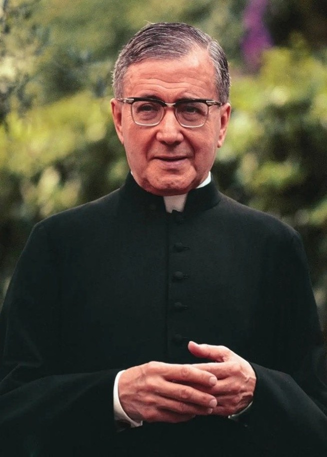
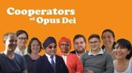

— St Josemaría

Saint Josemaría often said that the entire work of Opus Dei is summed up in providing formation. A formation that “does not concern only one part of the person, but the entire being: it has to reach equally the intellect, heart and will.”
And therefore, it is a human, professional, spiritual and apostolic formation, which aims at making the light and salt of Christ present in the ordinary activities of our life.
Recollections are a chance to step back from the whirlwind of daily tasks for around 2 hours of quiet prayer spent looking at God, the world, and ourselves. It includes a spiritual reading, a meditation given by a priest, examination of conscience, a talk, and benediction. The most important thing is to put yourself in front of our Lord, to look at Him and to let Him look at you.
| Center / Organiser | Address | Date / Frequency | Time |
|---|---|---|---|
| Nairana | Redfield College, Dural | 2nd Wednesdays | 7:30 PM |
| Nairana | Redfield College, Dural | Thursday after 2nd Wednesday | 7:30 PM |
| Nairana | Nairana, Pennant Hills | 3rd Tuesdays | 10:30 AM |
| Nairana | Nairana, Pennant Hills | 4th Saturdays (Young Professionals) | 9:15 AM |
| Mirrabooka | St Aidan’s Church, Rooty Hill | 2nd Fridays | 7:45 PM |
| Mirrabooka | Mirrabooka, Baulkham Hills | Wednesday before 2nd Friday (Young Men) | 6:45 PM |
| Mirrabooka | Wollemi College, Werrington | Monday before 2nd Friday | 7:00 PM |
| Westburne | St Dominic’s Catholic Church, Homebush | 3rd Wednesdays | 7:15 PM |
| Dartbrooke | Dartbrooke | 3rd Wednesdays | 7:30 PM |
| Warrane | Warrane College Chapel | 2nd Tuesdays | 7:15 PM |
If you wish to participate, or for additional information please contact us on: offofcoopph@outlook.com
For more information on Mirrabooka Recollections, visit: https://mirrabooka.org.au/dads
Retreats are a days-long break to spend time with God in silence and prayer. It is a time to renew our faith, welcome the Holy Spirit's light, and calmly explore the areas in which we can move forward in our Christian life.
Website: mensactivities.org
Email: mensretreats@kenthurst.org.au
To book, please email the contact person listed below and cc: Ian Kwan (ian.pl.kwan@gmail.com).
| Location | Contact Person | Phone |
|---|---|---|
| Castlemaine | Andy Mullins (apjmvic@gmail.com) | 0419 127 057 |
| Galong | Joe Arevalo (jl.areva@gmail.com) | 0410 325 599 |
| Bargo | Gary Steller (gws1156@gmail.com) | 0421 688 813 |
| Brooklands NZ | Luis Trullos (luistrullols1@gmail.com) | +64 21 915 294 |
Location: Bargo Conference Centre
| Dates | Organiser |
|---|---|
| June 12-14 (Fri-Sun) | Dartbrooke (Paul McMahon) |
| Oct 9-11 (Fri-Sun) | Nairana (Ian Kwan - ian.pl.kwan@gmail.com) |
| Oct 16-18 (Fri-Sun) | Mirrabooka (Charles Burfitt) – TBC |
The Education Development Association (EDA) is a registered charitable public company, limited by guarantee, and was established on 4 November 1964, setting out to empower young people to achieve their full potential through the delivery of educational programmes focused on character building.
EDA owns and operates a number of Study Centres around Australia. The spiritual formation and faith-based activities at its Centres are entrusted to Opus Dei. EDA now has study centres in NSW, QLD, VIC, and co-ordinates activities nationwide.
Indulgences which may be obtained by Cooperators of the Prelature of the Holy Cross and Opus Dei.
Available under the usual conditions (sacramental confession, the reception of Holy Communion, prayer for the Roman Pontiff and his intentions) with their heart wholly detached from sin:
1) On the date of appointment as a Cooperator.
2) February 14, which in the Prelature is the feast of Holy Mary Mother of Fair Love, and also the anniversary of the beginning of the work of Opus Dei with women in 1930 and of the foundation of the Priestly Society of the Holy Cross in 1943.
3) March 19, solemnity of St. Joseph.
4) June 29, solemnity of the Apostles Sts. Peter and Paul.
5) September 14, feast of the Exaltation of the Holy Cross.
6) September 29, feast of Sts. Michael, Gabriel and Raphael, Archangels.
7) October 2, memorial (a solemnity in the Prelature) of the Holy Guardian Angels and the anniversary of the founding of Opus Dei.
8) December 27, feast of St. John, Apostle.
9) Whenever they attend a spiritual retreat which lasts at least three days.
10) At the hour of death, if during their life they have habitually prayed some prayers; or if, in that moment, they fulfill the conditions for a plenary indulgence.
1) When they attend a Circle for Cooperators.
2) When they attend a day or evening of recollection.
3) Whenever they recite an aspiration while kissing the wooden Cross in the oratories of Opus Dei Centres.
4) Whenever they say a pious invocation during their work, be it manual or intellectual.
5) Whenever they say an aspiration while carrying out the works of piety or apostolate by which they cooperate in the spiritual work of the Prelature.
(Rescript No. 34/14 of April 28, 2014 & No. 17/75 of February 12, 1975 of the Apostolic Penitentiary; Enchiridion Indulgentiarum. Normae et concessiones, 1999.)
This is a translation of the original which is kept in our archives.
Rome, February 14, 2015 — Dr. Ernst Burkhart
In addition, the Cooperators share in the spiritual benefits of the Prelature and, at their death, in the suffrages which Opus Dei offers for its deceased.
| Event | Dates | Venues |
|---|---|---|
| Cooperators Afternoon | November 14 (Sat) | Nairana Study Centre, 12 Trebor Rd, Pennant Hills |
| Cooperator Workshop | September 11-13 (Fri-Sun) | Kenthurst Study Centre |
| Solemn Mass in honor of St. Josemaria | 7:30pm Friday June 26 | St Marys Cathedral in the City |
There will be no second Mass in Sydney this year.